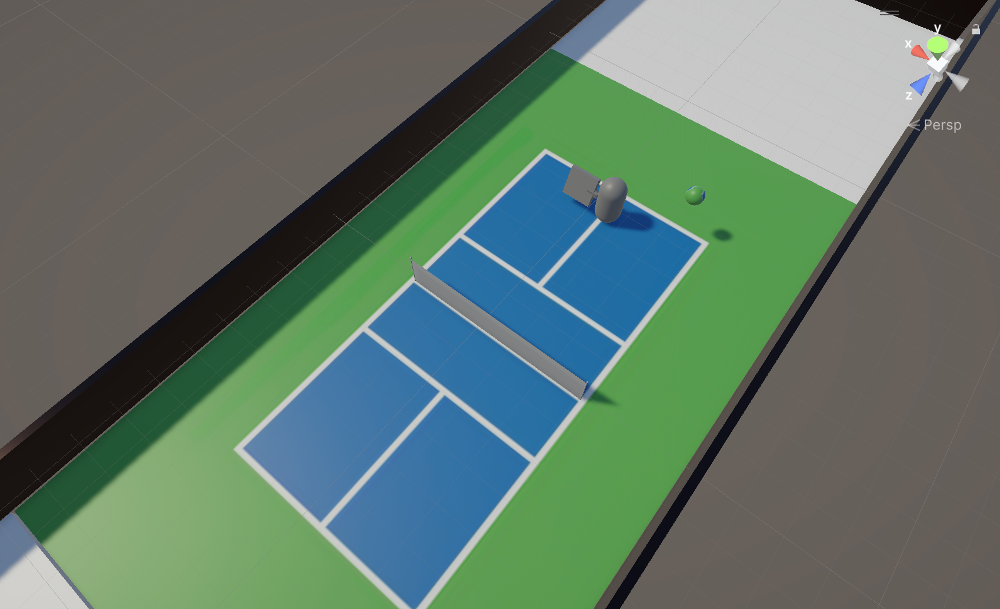
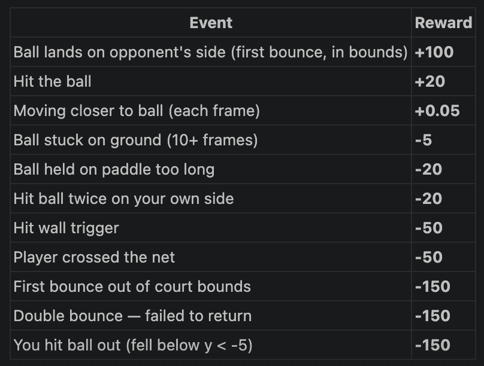

Machine Learning Final Pair Project
RL-Trained Agent for Pickleball
I built a Unity ML-Agents pickleball environment for serve, return, and multi-agent rally experiments.
Overview
The project builds a simplified 2D/3D Unity pickleball simulator using ML-Agents. Agents control paddle-attached players and learn serve/return behaviors and multi-agent rallying under shaped rewards and constrained observations.
Environment & implementation
- Unity + ML-Agents simulation with simplified dynamics: player as translating cylinder, paddle with single rotational DOF, and simplified net physics.
- Observation space includes agent position, ball position, and ball velocity (reduced observation variants used for self-play experiments).
- Training pipeline uses PPO (ML-Agents) with configurable dense rewards during early exploration.

Reward shaping & failure modes
Reward design was the central engineering task. Initial sparse rewards failed to teach hitting; a proximity reward enabled learning but produced reward-hacking behaviors like net-crossing and ball-holding. Iterative fixes included:
- Proximity reward to guide exploration (early training).
- Net-crossing penalty to prevent physically unrealistic behavior.
- Penalty for holding the ball on the paddle to stop infinite-collision exploits.
- Additional reward for lower, realistic returns to shape useful rallying behavior.
This cycle repeated throughout the project: reward design, unexpected exploit, diagnosis, then targeted penalty or reward modification.

Results
- Single-agent serve/return model achieved 84% serve-return success rate in the final evaluation (reported from experiments).
- Multi-agent extensions used self-play and shared-policy training; shared-policy produced the most stable rally behavior, with an average around 4 hits per episode and a max around 40 hits observed.
Engineering lessons
- Reward shaping dominates emergent behavior; small dense rewards can quickly produce exploitable policies.
- Observation-space design materially affects stability of self-play; reducing observations to necessary quantities improved training stability.
- Simulation simplifications (player/paddle model) made training tractable while preserving meaningful interactions to evaluate reward designs.
Links & media
The full environment and training scripts are on GitHub, with more detail in the Machine Learning DinkDonk final report.